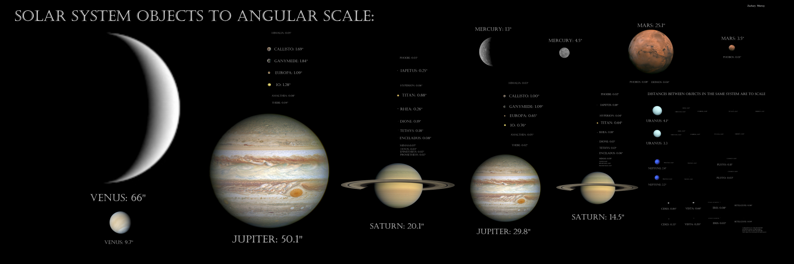
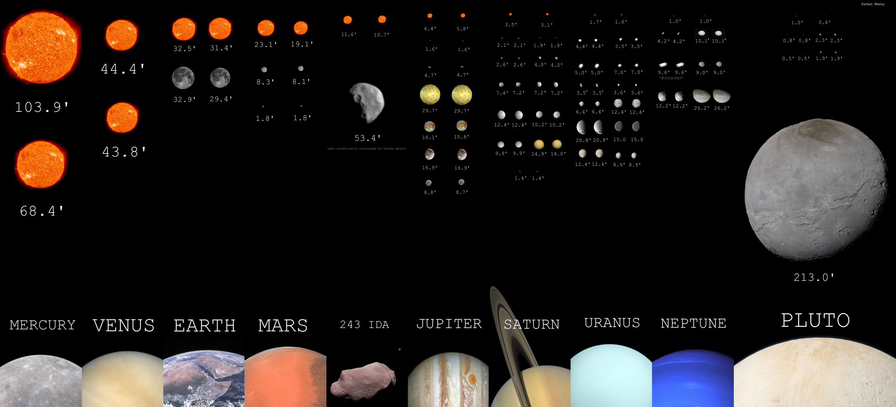

I've both served as a teaching fellow and taught independently many times, over several different subjects and institutions, these include:
Teaching Fellow, Harvard University:
(ASTR-1) The Big Questions of Astronomy [2019,2020]
(ASTR S-35) Fundamentals of Contemporary Astronomy: Frontiers of Current Research [2019]
I've also had the opportunity to develop and implement my own courses:
Harvard Summer School: Introduction to Astronomy & Astrophyiscs [2020-2023]
Urban Scholars Program: Intro to Astronomy [2018]
Urban Scholars Program: Intro to Python [2016,2018]
Outreach:
I was the president of the Cornell Astronomical Society, an astronomy club that specialized in bringing astronomy to the public. CAS principally did astronomy outreach on campus, in addition, to visting nearby schools with telescopes and to show students objects in the sky. In graduate school, I became involved in the Harvard Observing Project, which helped undergraduate students become familiar with taking observations and using the Clay Telescope.
Finally, I also run a pedagogy-focused celestial mechanics site, which you can find here.

Solar System Objects at Angular Scale when seen from Earth at different times. Click For Full Size.

Angular Size of Moons seen from their Hosts. Click For Full Size.

{kind=link}
{kind=link}